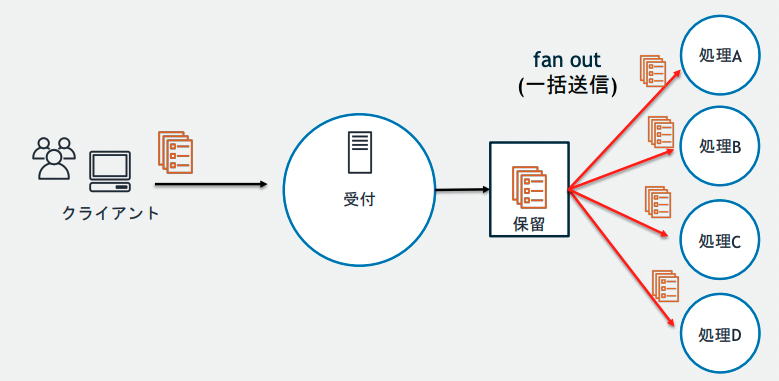
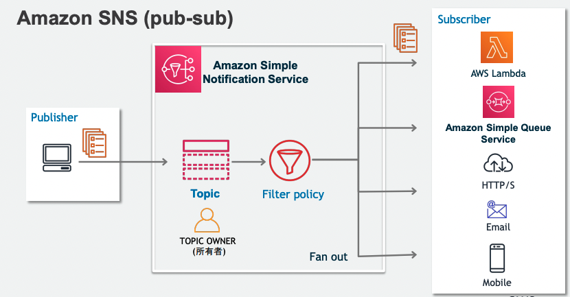
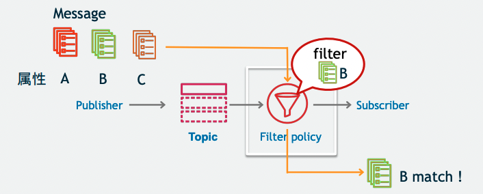
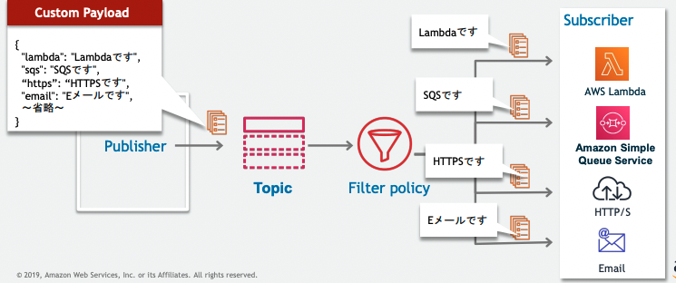
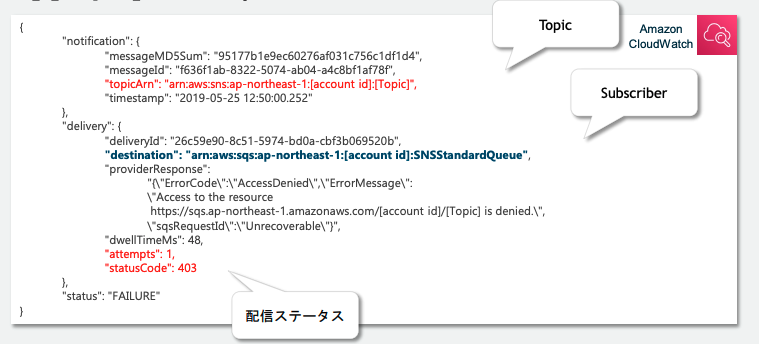
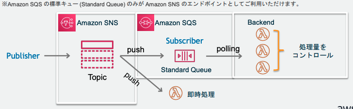
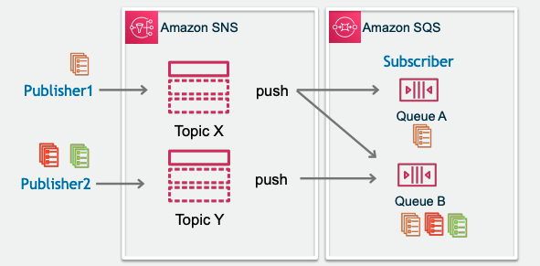
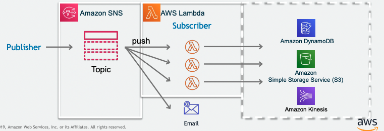

14. SNS¶
14.1. SNS概要¶
SNS(Simple Notification Service)は、マネージド型のメッセージ配信サービスで非同期なメッセージ配信を実現することができる
複数のSubscriberに対してpush型でメッセージを送信することが可能
特徴を整理すると以下
pub-subモデル：1つのメッセージを複数のSubscriberに送信
Push型：Sub側でpollingが不要でPub側が送りつける
HTTPSやメールなど複数プロトコルに対応

14.1.1. Push型のメリット¶
SNSは、push型であるため、Subscribe側でPollingの必要がない。
pull型である、SQSやMQでは、独立しているConsumerがpollingをする必要があり、Consumerが多くなるほど、コストがかかるという問題がある。また、キュー側も適切にpollingに対して解答が必要

14.2. SNSの代表機能¶
大きく二つの機能が存在
Mobile Push(プッシュ通知)
より一層マネージドなpippointを利用することが推奨されている。モバイルアプリが起動していなくても、通知が可能
モバイル通知をきっかけにアプリを起動してもらえる
★pub-sub
基本的には分散アプリケーションの統合用途に利用
14.2.1. pub-subについて¶
SNSはpub-subの機能として、以下が可能
様々なSubscriberに対してメッセージ配信
Lambda
SQS
HTTP/S
Email
Mobile
フィルタリング
Subscriberは購読するTopicごとにFilterを設定して、特定のメッセージだけを読み込むことができる

14.3. SNSの登場人物¶
Publisher：メッセージを配信する発行者
Subscriber：メッセージを受信する購買者
Topic：PubとSubを仲介して疎結合にする
14.3.1. Publisher¶
256キロバイトまでのメッセージをTopicに対して発行することができる。
S3のイベントやCodePipelineやLambdaから送信することができる。
14.3.2. Subscriber¶
事前に興味のあるTopicを購読設定しておくことで、メッセージが配信されるとSub側で受信することができる。
Filter機能を利用することで、Topicの中でも特定のメッセージを購読することができる。
LambdaやSQS、Eメールなどが設定可能。 PubとしてCode PipelineをSubとしてEメールを設定しておけば、Deploy前にメールで承認依頼を出すといったことができる。
14.4. Topic¶
通信チャネルとして機能する論理的なエンドポイント
TopicにはスタンダートとFIFOの２種類が存在し、順序性、重複性、スループットの面でメリデメがある。
スタンダート
順序性と重複性が保証がされない代わりにほぼ無制限のスループットが実現できるFIFO
順序性と重複排除が保証されるが、スループットは300件/secとなる
14.4.1. 順序性¶
FIFOトピックではメッセージを発行時に、メッセージグループIDを発行する。
同一のメッセージグループでは配信順序が保証され。すべてのメッセージで配信順序を担保するためには一つのメッセージグループIDとすれば良い。
14.4.2. 重複排除¶
リトライなどで、同じメッセージが配信されてしまうことは銀行業務などでは許されないので、重複排除の機能を利用する。
基本思想としては、特定の重複排除IDを持つメッセージが発行されてから５分間は同一IDを持つメッセージ配信を行わないようにする。 SNSではコンテンツベースの重複削除が機能として提供されており、SNSのコンテンツをSHA-256で暗号化して重複IDとする。
14.4.3. セキュリティ¶
14.4.3.1. メッセージの暗号化¶
KMSによってTopic内のメッセージ（本文）を暗号化することができる。 ただし、Topic名などのメタデータは暗号化対象外であることに注意。
SNSはIAMによるアクセス制御に加えて、Topicに対して、独自のアクセスポリシーを付与することで、IAMと合わせてアクセス制御することができる。
14.4.3.2. 通信経路のセキュリティ¶
Publisherから、Topicへのメッセージ送信はVPC endpointを利用することでAWSのVPC内部で通信を行うことができる。
14.5. 高度な利用方法¶
14.5.1. アクセスコントロール¶
Topicに対して、アクセスポリシーを発行することができる。
同じアカウント内であれば、基本的に設定は不要だが、オープンエンドポイントとして公開する場合はアクセスポリシーを設定する。
14.5.2. フィルター¶
Publisherがメッセージを発行する際、MessageAttributes（メッセージ属性）を利用することで、メタデータを指定することができる。
SubscriberはFilter Policyをリヨすいて、購読中のTopicに送信されるmessageをフィルターして部分受信することができる。

Filterは複数条件の組み合わせやホワイトリスト・ブラックリストが可能
14.5.3. 配信方法¶
送信するデータの形式を、エンドポイントごとに変更することが可能。 これによって、subscriberに応じた、メッセージ送信が可能

14.5.4. リトライ¶
TopicからSubへのメッセージ配信が失敗した場合に、４段階のリトライポリシーに従ってリトライ処理がされる
即時再試行
バックオフ前段階
バックオフ段階
バックオフ後段階
バっクオフとは、配信が失敗した時に間隔を徐々に伸ばしながらリトライする手法。 すべてのリトライ処理が実行されても配信ができない場合は、メッセージが破棄されるが、SQSと組み合わせてデットレターキューに配信することも可能
14.5.5. ロギング¶
CloudWatchと統合されており、配信状況については、CloudWatch Log Groupに配信される。
設定を行うことにより、自動で成功用と失敗用の記録をするロググループが作成される。記録には以下が記録される
対象のトピック
受信できなかったSubscriber
配信ステータスやタイムスタンプ

14.6. AWSサービスとの統合¶
14.6.1. CloudWatchとの連携（Publisher）¶
CloudWatch EventsのEvent Sourceとして、任意のサービスを設定し、Eventのターゲットとして、SNS Topicを設定可能
14.6.2. Step Function（Publisher）¶
Step FunctionのステートマシンとしてSNSを指定することができる。
14.6.3. S3（Publisher）¶
S3のオブジェクトの操作に対してSNSを発行することができる
14.6.4. SQS(subdcriber)¶
SNSとSQSの組み合わせは様々
例えば、SNSからSQSへメッセージ送信を噛ませることで、Consumer側からは、pull型として扱うことができる。

また、SNSに一度メッセージを送ってからSQSに配信することで、Publisherは一つのエンドポイントに送信しているだけなのに、１つのメッセージを複数のキューに配信することができる。
また、SQSは複数のSNSをSubscribeすることができる

14.6.5. Lambda(subdcriber)¶
Lambdaを噛ませることによって、様々な作り込みに対応できる。例を挙げると、
SNSでは標準接続できないAWSサービスに対しての処理
標準では準備されていないフィルタリング
